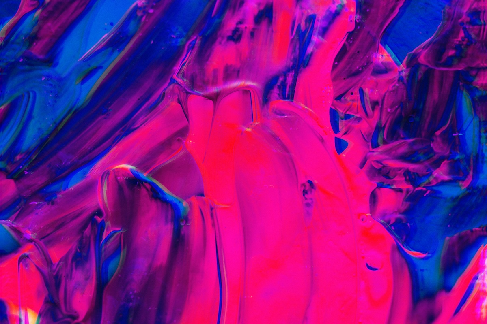

Fotoğrafta Renk Parlaklığı (Vibrance) ve Doygunluk (Saturation) Arasındaki Fark
Dijital fotoğraf düzenleme sürecinde renkler üzerinde yapılan küçük bir değişiklik bile fotoğrafın havasını tamamen değiştirebilir. Özellikle Vibrance (Renk Parlaklığı) ve Saturation (Doygunluk) fotoğraf düzenleme yazılımlarında en sık kullanılan iki renk ayarıdır. Ancak birçok yeni başlayan fotoğrafçı bu iki ayarın aynı olduğunu düşünür. Oysa gerçekte birbirlerinden önemli ölçüde farklı çalışırlar ve doğru kullanıldıklarında fotoğraflarınızın kalitesini belirgin şekilde artırabilirler.
Bu rehberde Vibrance ve Saturation arasındaki farkları, hangi durumlarda hangisinin tercih edilmesi gerektiğini ve profesyonel kullanım ipuçlarını bulacaksınız.
Vibrance Nedir?
Vibrance, fotoğrafta yer alan renklerin parlaklığını seçici olarak artıran bir ayardır. Yani tüm renkleri eşit şekilde güçlendirmek yerine, özellikle soluk (desaturated) olan renkleri hedef alır.
Vibrance’in temel özellikleri:
- Soluk renkleri güçlendirir.
- Zaten canlı olan renkleri fazla etkilemez.
- Ten tonlarını korur, bu nedenle portrelerde sıklıkla tercih edilir.
- Daha doğal ve dengeli bir sonuç üretir.
Vibrance ne zaman kullanılmalı?
- Doğal görünümü korumak istediğiniz fotoğraflarda.
- Ten tonu içeren portre çekimlerinde.
- Renk uyumunun korunmasının önemli olduğu ürün fotoğrafçılığında.
- Doğa ve manzara fotoğraflarında hafif bir renk canlılığı gerektiğinde.
Saturation Nedir?
Saturation (Doygunluk), fotoğraftaki tüm renklerin yoğunluğunu eşit şekilde artıran veya azaltan bir ayardır. Bu nedenle kontrollü kullanılmadığında fotoğrafta yapay bir görünüm oluşturabilir.
Saturation’un temel özellikleri:
- Tüm renkleri aynı ölçüde etkiler.
- Renk tonlarını yoğunlaştırır, göze çarpan sonuçlar üretir.
- Fazla kullanımda renk patlaması veya aşırı kontrast hissi oluşturabilir.
Saturation ne zaman kullanılmalı?
- Sanatsal, stilize veya güçlü renklerin istenildiği fotoğraflarda.
- Minimalist veya düz renk ağırlıklı sahnelerde.
- Grafik tasarım amaçlı fotoğraflarda.
- Renklerin güçlü bir duygusal etki yaratması hedeflendiğinde.
Vibrance ve Saturation Arasındaki Teknik Fark
Bu iki ayarın görüntüye uyguladığı değişiklik aslında fotoğrafın renk kanallarının nasıl düzenlendiğiyle ilgilidir:
| Özellik | Vibrance | Saturation |
|---|---|---|
| Etki tipi | Seçici | Her renge eşit |
| Ten tonları | Korur | Kolayca aşırı doygunlaşır |
| Doğallık | Yüksek | Kolay bozulabilir |
| Kullanım zorluğu | Daha güvenli | Dikkatli kullanılmalı |
| Profesyonel kullanım | Portre, manzara, ürün | Sanatsal işler, grafik |
Kısacası, Vibrance daha akıllı, Saturation daha güçlü bir renk artırma aracıdır.
Hangi Durumda Hangisini Kullanmalısınız?
- Portre fotoğrafları
- Vibrance: En güvenli seçimdir; cilt tonlarını bozmaz.
- Saturation: Kısıtlı ve düşük değerlerde kullanılmalı.
- Manzara fotoğrafları
- Hafif Vibrance + düşük Saturation birlikte kullanıldığında doğal bir canlılık oluşur.
- Ürün fotoğrafları
- Renk doğruluğu kritik olduğundan genellikle Vibrance tercih edilir.
- Sanatsal veya atmosferik fotoğraflar
- Saturation, duyguyu güçlendirmek için ideal olabilir.
Profesyonel İpuçları
- Vibrance ile başlamak en güvenli yöntemdir: Renk canlılığını artırmanız gerektiğinde ilk adım olarak Vibrance’ı kullanın. Genellikle fotoğrafın %80 oranında doğru renk canlılığına ulaşmasını sağlar.
- Saturation’ı düşük seviyelerde destekleyici olarak kullanın: Aşırıya kaçmadan yapılan küçük Saturation artışı, Vibrance’ın bıraktığı boşlukları doldurabilir.
- Cilt tonlarında Saturation’dan kaçının: Düşük bile olsa Saturation, cilt tonlarını kırmızıya doğru çeker. Bu, portrelerde istenmeyen bir görünüm oluşturur.
- HSL panelleriyle daha hassas kontrol sağlayın: Saturation tüm renkleri eşit artırdığından, her rengi ayrı ayrı düzenlemek isteyebilirsiniz. Bunun için Lightroom veya Camera Raw’daki HSL (Hue – Saturation – Luminance) panelini kullanarak her renk kanalını ayrı ayrı kontrol etmek daha profesyonel bir yaklaşımdır.
- Fazla düzenlemeyi histogramdan anlayabilirsiniz: Saturation arttıkça histogramın uçlara doğru yayılması artar. Bu, renklerin “patlamaya” başladığını gösterir.
Sonuç
Vibrance ve Saturation, renk düzenlemede birbirini tamamlayan ama farklı çalışan iki güçlü araçtır. Vibrance doğal ve dengeli bir renk canlılığı sağlarken, Saturation daha dramatik ve etkili sonuçlar üretir. Hangi ayarı kullanmanız gerektiği, fotoğrafın türüne ve hedeflediğiniz görünüme bağlıdır.
Fotoğraf düzenlemeye yeni başladıysanız Vibrance odaklı ilerlemek daha güvenli olur. Profesyonelleştikçe Saturation’ı belirli alanlarda yaratıcı bir araç olarak kullanabilir, hatta HSL ayarlarıyla çok daha detaylı renk kontrolü sağlayabilirsiniz.
Düzenlemelerde doğru ayarı kullanmak, fotoğraflarınızın profesyonel görünmesine direkt katkı sağlar. Renk yönetimi, fotoğrafın ruhunu belirleyen en önemli adımlardan biridir.